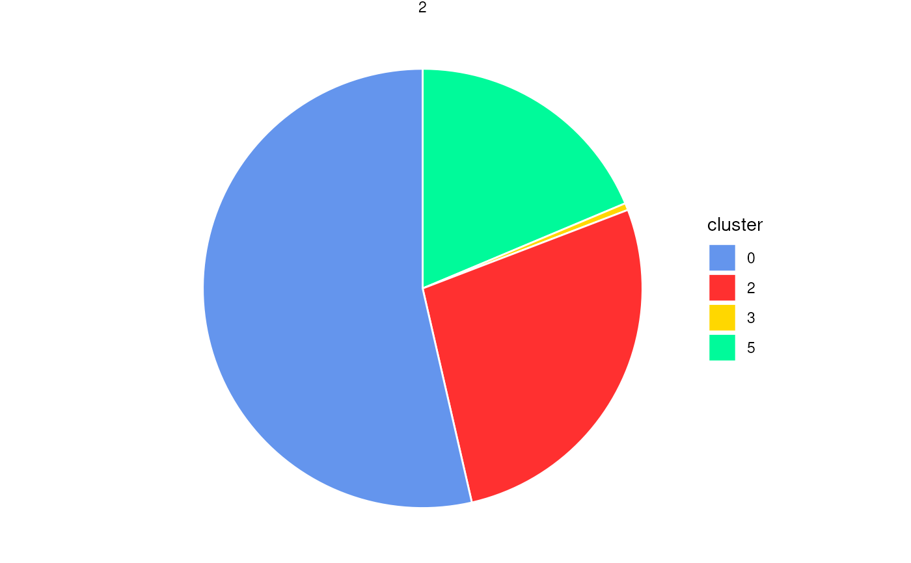
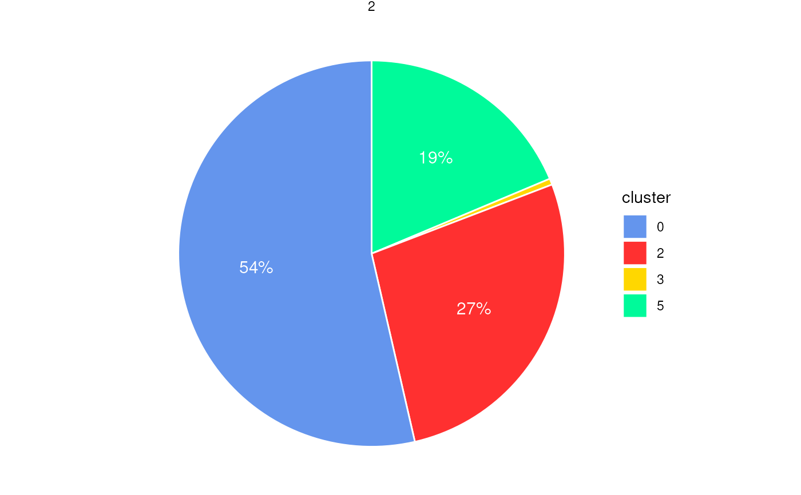
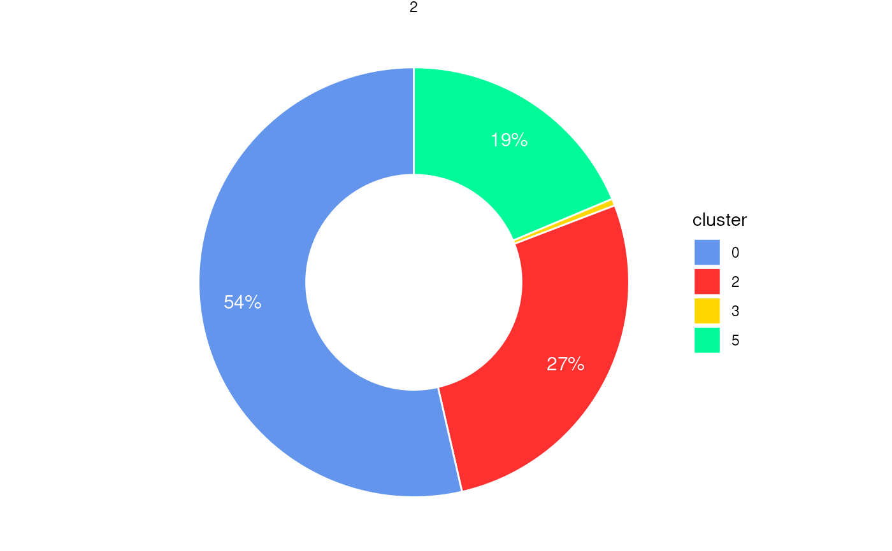

Pie chart or donut chart of cluster proportions inside spatial regions
Source:R/PlotStats.R
PlotStatsPie.RdGenerates pie or donut charts to visualize the proportion of cells
from different clusters within each spatial region (e.g., boundary or ring).
The plot is faceted by region_id to show the composition of
each spatial subregion. Optionally, percentage labels can be added
with filtering based on a minimum proportion threshold.
Usage
PlotStatsPie(
cell_stats = NULL,
plot_donut = FALSE,
add_labels = TRUE,
label_cutoff = 0.01,
label_color = "white",
label_size = 4,
label_nudge_x = 0.1,
colors = my_colors_15
)Arguments
- cell_stats
A data frame containing cluster statistics per region, typically the output from
StatsCellsInside(). Must include columnsregion_id,cluster, andproportion.- plot_donut
Logical. If
TRUE, a donut chart is generated; otherwise, a pie chart. Default isFALSE.- add_labels
Logical. If
TRUE, percentage labels are displayed inside each slice. Default isTRUE.- label_cutoff
Numeric. Proportional threshold below which labels are hidden (e.g.,
0.01= 1%). Default is0.01.- label_color
Character. Color of the percentage labels. Default is
"white".- label_size
Numeric. Text size for percentage labels. Default is
4.- label_nudge_x
Numeric. Horizontal adjustment for label positioning. Default is
0.1.- colors
A vector of cluster colors. Default uses
my_colors_15.
Examples
coords <- readRDS(system.file("extdata", "MouseBrainCoords.rds",
package = "SpNeigh"
))
boundary_points <- GetBoundary(
data = coords, one_cluster = 2,
eps = 120, minPts = 10
)
cells_inside <- GetCellsInside(data = coords, boundary = boundary_points)
stats_cells <- StatsCellsInside(cells_inside)
PlotStatsPie(stats_cells, add_labels = FALSE)

PlotStatsPie(stats_cells, label_cutoff = 0)
PlotStatsPie(stats_cells, label_cutoff = 0.01)

PlotStatsPie(stats_cells, plot_donut = TRUE)
